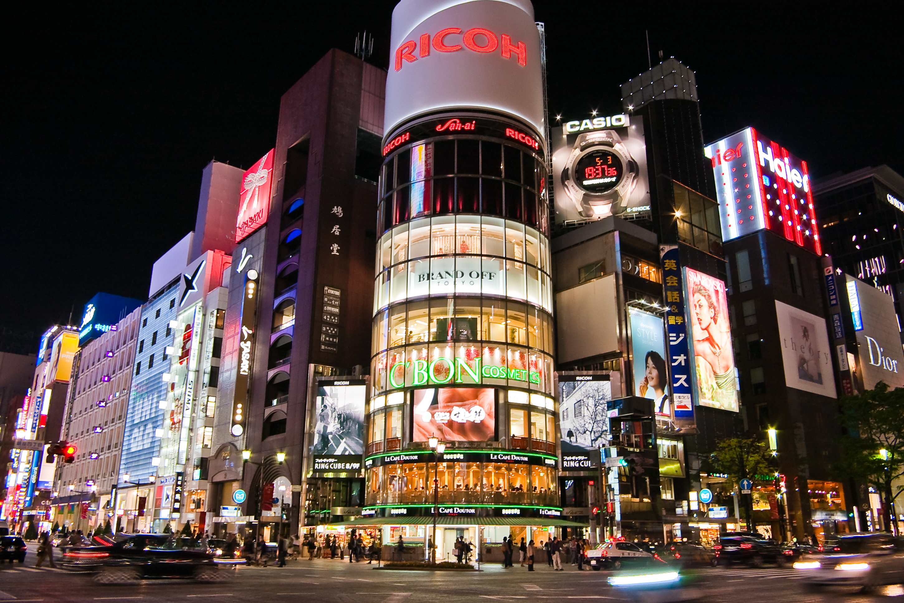
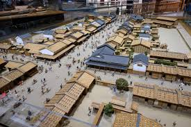
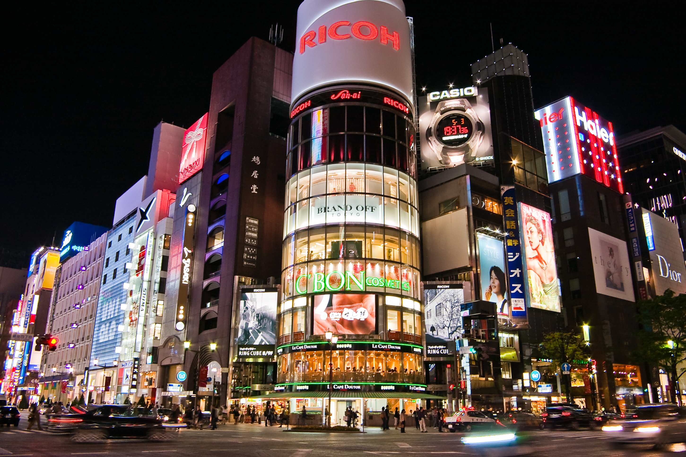
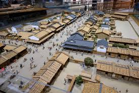

Shopping
Shibuya: Located around Shibuya station is a large shopping district where a lot of the fashion trends among the youth are born. Well known trend setting stores such as Shibuya 109 are located here. Dozens and dozens of other small fashion stores can also be found along the streets, everything from local shops to high end designer brands.
 



Ginza: Ginza is the place to go if you are looking for the more premium high end brands. You will find major electronics stores such as Apple and Sony here as well as designer clothing stores. Nearly every international big fashion brand can be found here.
Nihonbashi: If you are interested in the history of Japan then Nihonbashi is perfect for you. This place served as the center of trade in Tokyo during the Edo period. Recent redevelopment has allowed the district to conserve Tokyo's history. Here you will find traditional products and regional foods.